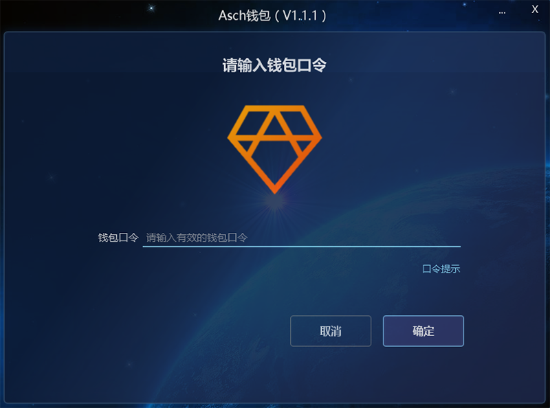

在开始深入了解阿希之前，你需要有一个阿希账号。账号是和阿希主链以及主链上各项服务进行交互的基础。目前阿希有三种钱包，用户可以选择合适的方式进行注册。
1.地址：https://wallet.asch.io或https://wallet.asch.cn，打开页面，点击“新账户”。

2.生成的12个英文单词是钱包的主密码。将主密码保存在一个安全的地方，一定不能忘了！然后点击“下一步”。
3.使用刚刚保存好的主密码登录网页钱包，可以看到余额等基本信息。
1.在阿希官网(https://asch.io)下载 PC 钱包，安装到本机。打开应用。
2.填写完信息后，点击“确定”。使用密码登录钱包界面。
3.每个钱包最多支持8个账户。
4.点击头像创建账户。
5.保存好主密码，就可以开始使用了。
1.在阿希官网(https://asch.io)下载安卓手机钱包，安装到本机。打开应用，点击“创建用户”。输入账户名称及密码，点击“创建用户”。
2.备份主密码。
阿希主链上的代币为阿希币(XAS)。 阿希币主要用于阿希主链上的转账、注册资产、注册受托人、投票等操作。目前获取阿希币的途径主要有：
1、交易所购买：可以到首页(https://asch.io)最后查看支持阿希币的交易所。
2、场外交易或从朋友那里获取。
3、关注阿希的社交媒体(从https://asch.io尾部获取)，参与阿希不定期举办的活动。
4、参与到阿希社区的建设，获取奖励。
5、注册成为受托人，得票率进入前101可以获取区块奖励。
1.查询阿希币余额。
2.点击“资产”页面，查询阿希主链其他资产余额。
3.查看钱包地址及设置二级密码。

4.投票。
5.转账。
1.什么是阿希的节点受托人？
阿希币的受托人通俗的讲相当于比特币中的矿工，具有生产区块的权利，在ASCH生态中这个过程叫做锻造(forging)。
锻造不像比特币挖矿那样需要很强的算力，普通服务器即可进行，验证记账权的算法综合了时间片验证、受托人随机排名、受托人签名以及pbft算法等，具体可以参考阿希白皮书。
排名前101的受托人按照时间顺序轮流产生区块，区块间隔为10秒。当轮班受托人出现异常无法生产区块时，则延期到下一个10秒，由下一个受托人继续生产。
目前任何持币量大于100XAS的持币人都可以注册成为受托人。但只要得票率在前101名可以进行区块锻造。
2.受托人收益。
每当阿希币的受托人节点生产一个区块，就会有3.5个币的奖励。
ASCH系统的区块奖励从464500块开始，初始奖励3.5币，每300万块递减一次，大约为1年。
每天产块总收益：24*60*60/10*3.5=30240 XAS
每个受托人每天产块收益：30240/101=299.4 XAS
区块奖励会随着时间递减，具体时间则以未来的某一区块高度为准
ASCH系统的区块奖励从464500块开始，初始奖励3.5币，每300万块递减一次，大约为1年。
从15464500块以后，奖励不再递减，每年有略小于1.5%的通胀率
区块奖励如下：
3.如何获取其他用户投票
阿希是一个高速成长的社区，社区的发展离不开社区成员的共同努力。受托人可以根据自己的能力，在开发、运营、推广、营销等方面贡献自己的力量。基于这些贡献，受托人可以去社区进行拉票，如果得票率进入前101名，即可获得区块的锻造权和获取相应收益。
1.购买一台云服务器。
2.安装依赖包。
3.安装aschd。
4.配置受托人信息，启动应用。
详细可参考：
https://github.com/AschPlatform/asch/blob/master/docs/asch_install.md阿希为区块链应用开发提供了一系列的开发工具，包括SDK、命令行工具以及一系列的REST API接口。 开发者可以根据自己的喜好和环境选择合适的开发工具。以下是以生成账户为例，使用不同工具完成的方法：
1.调用API
2.使用asch-js
3.使用asch-cli
详细可参考：
API：https://github.com/AschPlatform/asch/blob/master/docs/asch_http_interface.md ASCH-js: https://github.com/AschPlatform/asch-js ASCH-cli:https://github.com/AschPlatform/asch/blob/master/docs/asch_cli_usage.md1.搭建本地开发节点。
2.启动localnet并安装asch-cli。
3.本地创建一个 Dapp 模板。
4.注册应用到主链。
5.部署应用代码及子网络。
6.实现业务逻辑。
详细可参考：
https://github.com/AschPlatform/asch/blob/master/docs/dapp_docs/1_hello.md如果你是开发者:
欢迎对我们的代码仓库提交 Pull Request 或者发起 Issue。
如果你来自海外或擅长英语：
欢迎加入海外运营组或翻译组，帮助阿希完善在英语社区的推广。
如果你文笔不错：
欢迎写文章向外人介绍阿希，扩大阿希社区。
如果你有好的想法：
欢迎到论坛(https://bbs.asch.io)发帖反馈或者发送邮件到asch@asch.io。